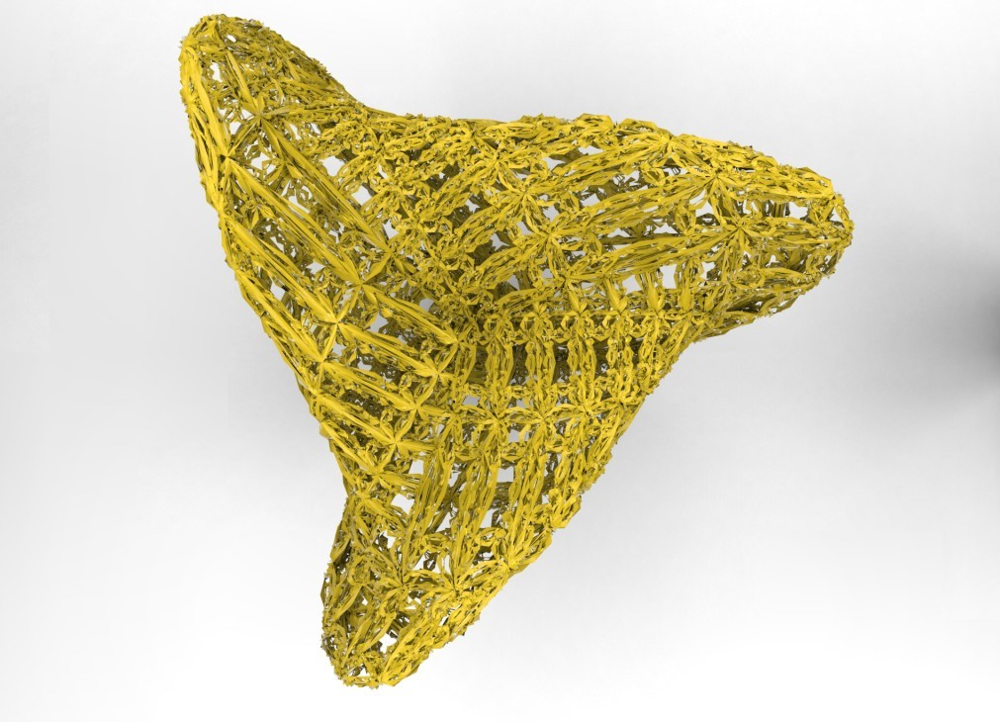
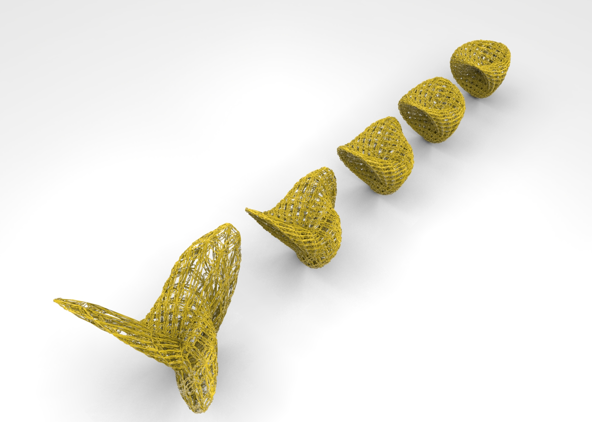
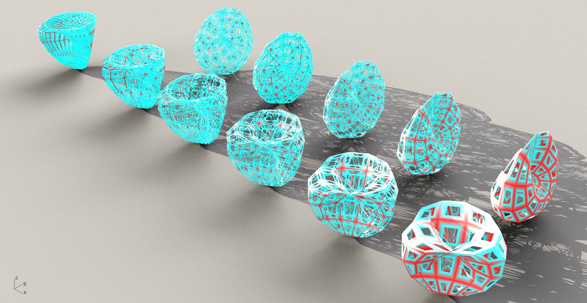
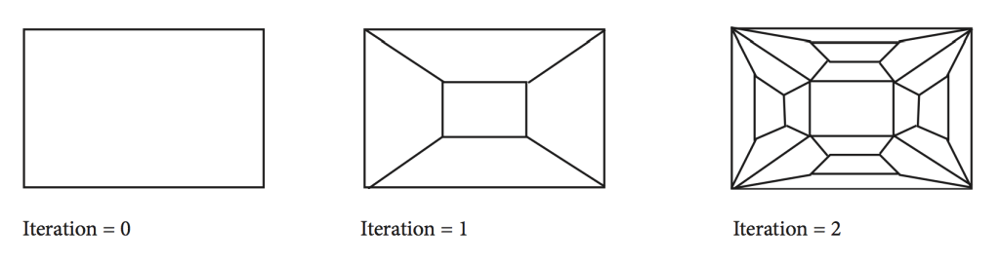

Rhino.Python - Boy Surface and subdivision

Boy Surface and two subdivision rules. Boy Surface with different parameters

Mesh Analysis – Number of neighbor vertexes.

Subdivision Rule – Window Frames:

“””
####################################################################
Computational Design Assignment 05
Kao, Ting-Chun
Mesh subdivision and analysis
####################################################################
“””
import Rhino as rh
import Rhino.Geometry as rg
import rhinoscriptsyntax as rs
import math
import System as sys
import scriptcontext as sc
from random import random
from scriptcontext import escape_test
def crossCapVertex(domainXY, resolutionXY):
vertex = []
for i in range(resolutionXY[0]+1):
u = domainXY[0] + (domainXY[1]-domainXY[0])*i/resolutionXY[0]
for j in range(resolutionXY[1]+1):
v = domainXY[2] + (domainXY[3]-domainXY[2])*j/resolutionXY[1]
a = 10
x = a/2 * math.sin(u) * math.sin(2*v)
y = a * math.sin(2*u) * math.pow(math.sin(v),2)
z = a * math.cos(2*u) * math.pow(math.sin(v),2)
vertex.append( (x,y,z) )
return vertex
def boySurface(domainXY, resolutionXY):
vertex = []
for i in range(resolutionXY[0]+1):
u = domainXY[0] + (domainXY[1]-domainXY[0])*i/resolutionXY[0]
for j in range(resolutionXY[1]+1):
v = domainXY[2] + (domainXY[3]-domainXY[2])*j/resolutionXY[1]
a = 10
r = 0.5 # 0 to 1
b = 2 - r*math.sqrt(2)*math.sin(3*u)*math.sin(2*v)
x = a * ( math.sqrt(2) * math.cos(2*u) * math.pow(math.cos(v),2) + math.cos(u) * math.sin(2*v) ) / b
y = a * ( math.sqrt(2) * math.sin(2*u) * math.pow(math.cos(v),2) - math.sin(u) * math.sin(2*v) ) / b
z = a* 3 * math.pow(math.cos(v),2) / b
vertex.append( (x,y,z) )
return vertex
def createmeshfaces(resolutionXY):
nX = resolutionXY[0]
nY = resolutionXY[1]
f = []
for i in range(nX):
for j in range(nY):
baseindex = i*(nY+1)+j
A = baseindex
B = baseindex+1
C = baseindex+nY+2
D = baseindex+nY+1
f.append( (A, B, C, D) )
return f
def meshfunction_xy():
domain = (-math.pi, 0, -math.pi, 0)
resolutionXY = (30,10)
#verts = crossCapVertex(domain, resolutionXY)
verts = boySurface(domain, resolutionXY)
faces = createmeshfaces(resolutionXY)
return rs.AddMesh(verts, faces)
def midPt(ptsList):
o = rg.Vector3d(0,0,0)
for pt in ptsList:
pt = rg.Vector3d(pt)
o = rg.Vector3d.Add(o, pt)
mid = rg.Vector3d.Divide(o, len(ptsList))
return rg.Point3d(mid)
def midPtList(ptsList):
o = midPt(ptsList)
mList = []
for pt in ptsList:
pt = rg.Vector3d(pt)
o = rg.Vector3d(o)
m = rg.Vector3d.Add(o, pt)
m = rg.Vector3d.Divide(m, 2)
m = rg.Point3d(m)
mList.append(m)
return mList
def extrudePt(pt, normal, scale):
if type(pt) is rg.Point3d:
pt = rg.Vector3d(pt)
normal = rg.Vector3d.Multiply(scale, normal)
pt = rg.Vector3d.Add(pt, normal)
pt = rg.Point3d(pt)
if type(pt) is list:
ptList = []
for p in pt:
p = rg.Vector3d(p)
normal = rg.Vector3d.Multiply(scale, normal)
p = rg.Vector3d.Add(p, normal)
p = rg.Point3d(p)
ptList.append(p)
pt = ptList
return pt
def meshSubdivisionToCentor(mesh):
faceVerts = rs.MeshFaceVertices( mesh )
faceNormal = rs.MeshFaceNormals( mesh )
verts = rs.MeshVertices(mesh)
newPtList = verts[:]
newPtIndexList = []
for i in range(len(faceVerts)):
a = faceVerts[i][0]
b = faceVerts[i][1]
c = faceVerts[i][2]
d = faceVerts[i][3]
fourPt = [verts[a], verts[b], verts[c], verts[d]]
mid = midPt(fourPt)
mid = extrudePt(mid, faceNormal[i], 0.2)
newPtList.append(mid)
newPtIndexList.append((len(verts)+i))
#rs.AddPoint(mid)
escape_test()
newFaceVertx = []
for i in range(len(faceVerts)):
a = faceVerts[i][0]
b = faceVerts[i][1]
c = faceVerts[i][2]
d = faceVerts[i][3]
e = newPtIndexList[i]
FaceA = (a, b, e)
FaceB = (b, c, e)
FaceC = (c, d, e)
FaceD = (d, a, e)
newFaceVertx.append(FaceA)
newFaceVertx.append(FaceB)
newFaceVertx.append(FaceC)
newFaceVertx.append(FaceD)
newMesh = rs.AddMesh(newPtList, newFaceVertx)
return newMesh
def meshSubdivisionHole(mesh, iteration = 1):
faceVerts = rs.MeshFaceVertices( mesh )
faceNormal = rs.MeshFaceNormals( mesh )
verts = rs.MeshVertices(mesh)
newPtList = verts[:]
newPtIndexList = []
for i in range(len(faceVerts)):
a = faceVerts[i][0]
b = faceVerts[i][1]
c = faceVerts[i][2]
d = faceVerts[i][3]
fourPt = [verts[a], verts[b], verts[c], verts[d]]
mid4 = midPtList(fourPt)
if iteration <= 1:
scale = 0.1
else:
scale = 0.4
mid4List = extrudePt(mid4, faceNormal[i], scale)
for count, p in enumerate(mid4List):
newPtList.append(p)
newPtIndexList.append((len(verts) + i*4 + count))
escape_test()
newFaceVertx = []
for i in range(len(faceVerts)):
a = faceVerts[i][0]
b = faceVerts[i][1]
c = faceVerts[i][2]
d = faceVerts[i][3]
e = newPtIndexList[i*4+0]
f = newPtIndexList[i*4+1]
g = newPtIndexList[i*4+2]
h = newPtIndexList[i*4+3]
FaceA = (a, b, f, e)
FaceB = (b, c, g, f)
FaceC = (c, d, h, g)
FaceD = (d, a, e, h)
newFaceVertx.append(FaceA)
newFaceVertx.append(FaceB)
newFaceVertx.append(FaceC)
newFaceVertx.append(FaceD)
newMesh = rs.AddMesh(newPtList, newFaceVertx)
if iteration > 0:
escape_test()
previousMesh = meshSubdivisionHole(newMesh, iteration-1)
rs.DeleteObject(newMesh)
return previousMesh
#”””
if iteration == 0:
triangleMesh = meshSubdivisionToCentor(newMesh)
rs.DeleteObject(newMesh)
return triangleMesh
#”””
#return newMesh
def setMeshColor(oMesh):
faceVerts = rs.MeshFaceVertices( oMesh )
faceNormal = rs.MeshFaceNormals( oMesh )
verts = rs.MeshVertices(oMesh)
mesh = rg.Mesh()
for i in verts:
mesh.Vertices.Add(i)
for i in faceVerts:
mesh.Faces.AddFace(i[0], i[1], i[2], i[3])
topoMeshVertex = mesh.TopologyVertices
vs = mesh.Vertices
vs.GetConnectedVertices(0)
edgeNumber = []
for i in range(vs.Count):
index = vs.GetConnectedVertices(i)
num = len(index)
edgeNumber.append(num)
nMax = max(edgeNumber)
nMin = min(edgeNumber)
colors = []
for i in range(vs.Count):
index = vs.GetConnectedVertices(i)
num = len(index)
num = (num-nMin) * 255/(nMax-nMin)
color = sys.Drawing.Color.FromArgb(num, 255-num,255-num)
colors.append(color)
rs.MeshVertexColors(oMesh, colors)
def main():
rs.EnableRedraw(False)
obj = meshfunction_xy()
newObj = meshSubdivisionHole(obj, 2)
rs.DeleteObject(obj)
setMeshColor(newObj)
rs.EnableRedraw(True)
if __name__ == “__main__”:
main()